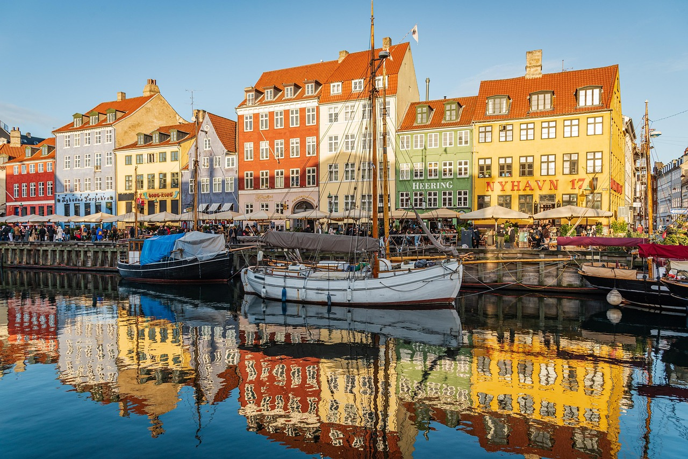
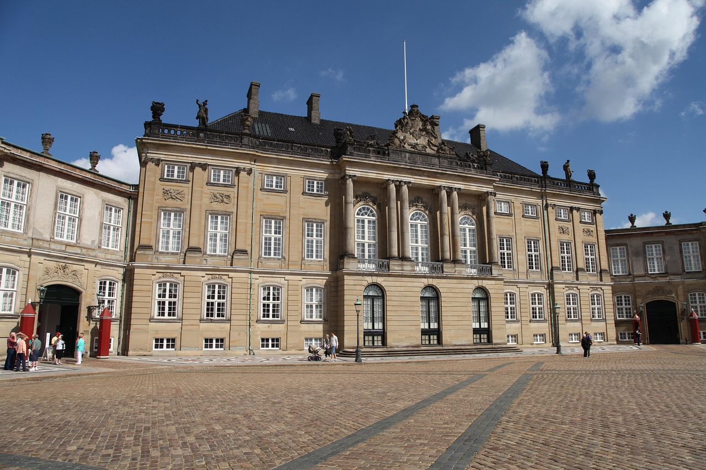
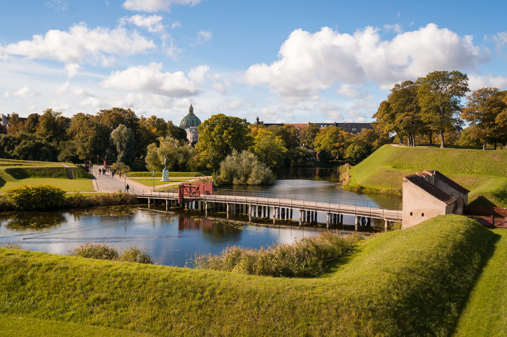

Det Klassiske København
Nyhavn

Det farvestrålende og historiske havnekvarter fra 1600-tallet, som i dag summer af liv, caféer og smukke gamle træskibe. Det er et af de mest ikoniske steder i København, og et perfekt sted at opleve byens maritime stemning. Her kan du gå langs kanalen, nyde en is eller tage et klassisk feriebillede foran de farverige huse, som gør Nyhavn kendt verden over.
Amalienborg Slot

Det majestætiske slot, som er dronningens og den kongelige families vinterresidens, centreret omkring den smukke, ottekantede slotsplads. Hvis du planlægger din cykeltur, så du rammer slotspladsen præcis klokken 12:00, kan du opleve den traditionsrige Den Kongelige Livgardes vagtskifte. Kig også op på flagstængerne; hvis flaget er hejst, betyder det, at de kongelige er hjemme i slottet lige nu.
Den Lille Havfrue

Danmarks mest berømte eventyrfigur, inspireret af H.C. Andersens fortælling, der sidder på sin sten ved Langelinie og skuer ud over vandet. Selvom hun er overraskende lille i virkeligheden, har den over 100 år gamle bronzestatue en helt magisk tiltrækningskraft på besøgende fra hele verden. Den smukkeste udsigt får du tidligt på dagen, hvor solens stråler rammer hende perfekt, og du slipper for de største turistbusser.
Kastellet

Et af de bedst bevarede fæstningsanlæg i Nordeuropa, formet som en stjerne, hvor du kan cykle midt i historiske rammer og smuk natur. Når du cykler op på voldene, bliver du mødt af en fantastisk panoramaudsigt over havnen og en smuk gammel, rød vindmølle, der ligner noget fra et postkort. Det er en fredelig oase midt i byen, hvor de lokale elsker at gå ture, og hvor historiens vingesus virkelig kan mærkes.
Klar til at opleve København?
Book din tur med Guldkareten i dag og oplev det klassiske København på den bedste måde.
Kontakt os